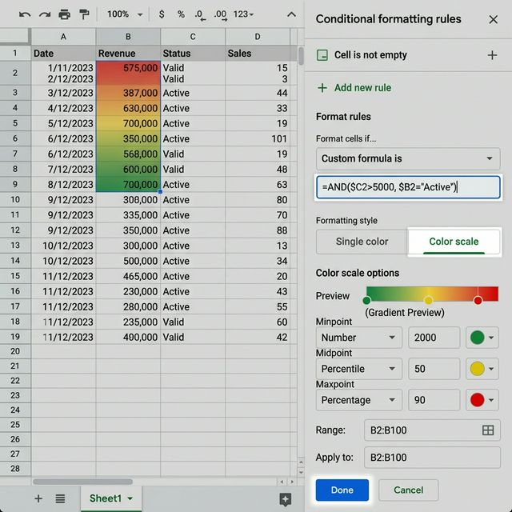
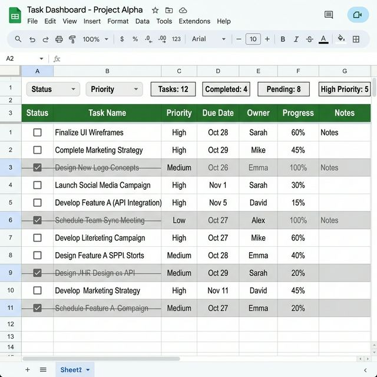
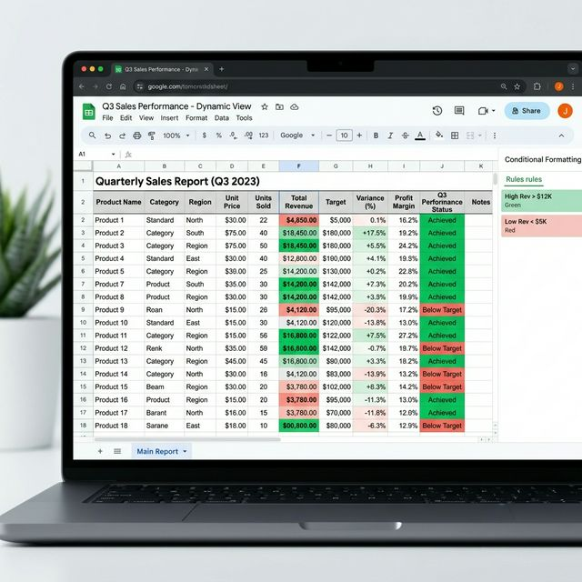

[주요 포인트]
방대한 데이터 속에서 특정 조건에 부합하는 셀을 일일이 맨눈으로 찾는 것은 엄청난 시간 낭비입니다. 구글 스프레드시트의 '조건부 서식(Conditional
Formatting)' 중에서도 '맞춤 수식(Custom Formula is)' 기능은 비즈니스 대시보드 구축의 핵심입니다. 오늘은 단순히 값의
대소를 비교하는 기초 수준을 넘어, 체크박스 연동, 특정 텍스트 포함 여부에 따른 행(Row) 전체 색상 변경 등 실무에서 즉시 써먹을 수 있는 심화 기법을 완벽하게 해부합니다.
1. 조건부 서식의 패러다임: 왜 '맞춤 수식'인가?
일반적으로 조건부 서식 하면 '셀 값이 100보다 큰 경우 빨간색'과 같이 구글이 기본적으로 제공하는 규칙을 떠올립니다. 하지만 실무에서는 "B열의 값이 '완료'일 때, A열부터 E열까지 행 전체를 회색으로
칠해달라"는 식의 입체적인 요구사항이 빈번하게 발생합니다. 기본 규칙으로는 이러한 다차원적인 서식 적용이 불가능합니다.
바로 이때 구원투수로 등장하는 것이 '맞춤 수식(Custom
Formula is)'입니다. 논리값(TRUE/FALSE)을 반환하는 수식을 작성하여, 해당 수식이 TRUE일 때만 지정한 서식이 발동되도록 설계하는 방식입니다. 이를 완벽하게 이해하면
수천 행의 매출 데이터나 재고 리스트를 살아 숨 쉬는 интерактив(인터랙티브) 대시보드로 탈바꿈시킬 수 있습니다.
맞춤 수식의 핵심은 절대 참조($)와 상대
참조의 개념을 서식 적용 범위에 어떻게 매핑하느냐에 달려 있습니다. 이 원리만 깨우치면 복잡한 매크로(Apps Script) 없이도 시각적인 자동화 시스템을 가볍게 구축할 수 있습니다.
2. 기초 다지기: 특정 단어가 포함된 셀 자동 강조
가장 먼저, 간단한 텍스트 기반 강조 트릭부터 짚고 넘어갑시다. 보통 '텍스트에 포함' 기본 규칙을 사용하지만, 대소문자를 엄격하게 구분하거나 여러 개의 단어(예: '긴급' 또는 '에러') 중 하나라도 포함될
때 서식을 적용하고 싶다면 맞춤 수식을 활용해야 합니다.
REGEXMATCH 함수를 맞춤 수식에 결합하면 이 문제가 단번에 해결됩니다. 정규표현식을 통해 복잡한 문자열 패턴을 필터링하여 시각적으로
즉시 경고를 띄울 수 있습니다. 특히 CS 고객 문의 데이터나 서버 로그를 분석할 때 이 기법 하나만으로도 데이터 클렌징 속도가 비약적으로 상승합니다.
작업 방법은 대상 범위(예:
A2:A100)를 잡고, 서식 규칙에서 '맞춤 수식'을 선택한 뒤 아래와 같은 수식을 입력하는 것입니다. 데이터가 추가될 때마다 "긴급"이나 "에러"라는 단어가 타이핑되는 순간 셀의 배경색이 붉게 변하게
됩니다.
=REGEXMATCH(A2, "긴급|에러|Error")

조건부 서식 패널에서 '맞춤 수식'을 설정하는 UI 디테일 / AI 제작 이미지
3. 실무 하이라이트 1: 조건에 따라 '행 전체' 색상 바꾸기
가장 많은 실무자들이 궁금해하는 '단일 셀이 아닌 행 전체 서식 변경' 방법입니다. 예를 들어 B열에 프로젝트 진행 상태(진행 중, 대기, 완료)가 나열되어 있고, 상태가
"완료"로 변경될 때 해당 데이터 라인(A열~F열) 전체의 색상을 진한 회색으로 덮어버리고 싶다고 가정해 보겠습니다.
해결책은 참조 고정(절대 참조)에 있습니다. 범위로 `=A2:F100`을
잡았다면, 수식 입력칸에는 열(Column) 문자에만 달러(`$`) 기호를 붙인 형태의 수식을 작성해야 합니다. 이렇게 되면 서식 엔진이 A열부터 F열까지 각 셀을 검사할 때, 판단 기준을 오직 `$B`열
하나에만 고정시키게 됩니다.
만약 `$B2`가 아니라 `B2`라고 상대 참조를 입력하면, 서식이 오른쪽 열로 넘어갈 때 판단 기준 열도 함께 C열, D열로 이동해버려 행 전체가 칠해지지 않고
서식이 엉망이 됩니다. 이것이 맞춤 수식을 활용한 행 단위 서식 칠하기의 알파이자 오메가입니다.
=$B2="완료"
4. 가상 데이터 테이블: 상태별 행 색상 적용 예시
위에서 설명한 로직이 실제 스프레드시트 안에서 어떻게 구현되는지 이해를 돕기 위해 아래의 가상 데이터 테이블을 살펴보겠습니다. 수식 `=$C2="완료"`를 `A2:D5` 범위에 적용했다고 가정합니다.
A (ID)
B (프로젝트명)
C (상태)
D (담당자)
P001
신규 웹사이트 런칭
진행 중
김민수
P002
결제 시스템 연동
완료
이수진
P003
마케팅 배너 디자인
대기
박지훈
P004
서버 보안 업데이트
완료
최영호
C열의 상태가 "완료"인 P002와 P004 데이터 행 전체가 회색으로 변하고 취소선이 그어진 것을 확인할 수 있습니다. 프로젝트 관리 대시보드에서 처리된 업무를 시각적으로 제거하는 데 최고의 무기입니다.

체크박스 하나만 클릭하면 행 전체가 회색 취소선으로 처리되는 전문가용 대시보드 레이아웃 / AI 제작 이미지
5. 실무 하이라이트 2: 체크박스와 연동된 스마트 투두리스트
텍스트 입력 대신 더 직관적인 UI 요소를 원한다면 체크박스(Checkbox)를 도입해 보세요. 구글 스프레드시트 상단 메뉴 [삽입] - [체크박스]를 통해 셀에 체크박스를
생성할 수 있습니다. 놀라운 점은 체크박스가 켜지면 내부 데이터는 논리값 `TRUE`, 꺼지면 `FALSE`로 인식된다는 것입니다.
이를 조건부 서식에 연동하면, 클릭 한 번으로 미려한 인터랙션을
구현할 수 있습니다. 예를 들어 A열에 체크박스가 있고 B열부터 할 일 리스트가 적혀 있다면, 범위 전체에 아래의 맞춤 수식을 걸어두는 것만으로 체크 즉시 행 전체에 취소선(Strike-through)과
배경색이 적용됩니다.
이 기능은 특히 협업 부서에서 공용으로 사용하는 마일스톤 시트 관리에서 압도적인 효율을 자랑합니다. 관리자가 매번 상태 텍스트를 업데이트하는 번거로움 없이, 실무자들의 클릭
피드백만으로 프로젝트 전체의 진행 흐름이 시각적으로 통제되기 때문입니다.
=$A2=TRUE
6. 중복 데이터(Duplicate) 빛의 속도로 찾아내기
고객 DB나 상품명 리스트를 취합하다 보면 필연적으로 중복 데이터가 발생합니다. UNIQUE 함수로 걸러낼 수도 있지만, 원본 데이터를 파괴하지 않은 채 중복된 셀만 쏙쏙 짚어내
붉게 칠하고 싶다면 갓성비 만점의 COUNTIF 함수를 맞춤 수식에 활용하면 됩니다.
범위 지정 후 수식을 작성할 때, 전체 범위 내에서 "현재 검사 중인 셀의 값이 몇 번 등장하느냐"를 세도록
지시합니다. 그 횟수가 1을 초과하면 서식을 발동시킵니다. 수천 건의 이메일 주소 리스트 중복 검사가 단 3초 만에 끝나는 기적을 보실 수 있습니다.
주의할 점은 데이터 범위가 방대할 경우 시스템
연산 리소스를 꽤 차지한다는 것입니다. 이 경우 평소에는 수식을 해제해 두었다가, 필요할 때만 서식을 복사-붙여넣기하여 검사 툴처럼 사용하는 것이 시트의 렌더링 속도를 쾌적하게 유지하는 노하우입니다.
=COUNTIF($A$2:$A$100, A2)>1
7. 교차 배경색 (Zebra Stripes) 자동 만들기
구글 시트에는 '대안 색상(Alternating colors)'이라는 기본 기능이 있어 표에 번갈아 가며 배경색을 넣을 수 있습니다. 그러나 중간에 행을 정렬(Sort) 하거나 데이터를 삽입하면 색상이
뒤죽박죽 엉키는 경우가 발생합니다.
데이터의 물리적 위치가 변하더라도 항상 짝수 행/홀수 행에 일관된 배경색을 유지하고 싶다면, 조건부 서식과 ROW,
ISODD(또는 ISEVEN) 함수를 조합해야 합니다. 현재 셀의 행 번호를 가져온 뒤 홀수인지 짝수인지 판별하여 색상을 칠하는 방식이므로, 필터링을 걸거나 행을 삭제해도 얼룩말 무늬가 영구적으로
보존됩니다.
특히 가로폭이 넓은 방대한 재무제표나 벤더 단가표를 읽을 때 제브라 패턴(Zebra pattern)은 가독성을 비약적으로 향상시킵니다. 복잡한 표를 디자인하는 담당자라면 반드시
숙지해야 할 고급 브랜딩 기법 중 하나입니다.
=ISEVEN(ROW()) /* 짝수 행에만 서식 적용 */
8. 마감일 알리미: 날짜 기반 동적 서식
프로젝트 관리의 가장 큰 스트레스는 다가오는 기한(Deadline)을 놓치는 것입니다. 오늘 날짜를 기준으로 마감일이 3일밖에 남지 않은 항목들을 자동으로 붉게 빛나게 만들면,
그 어떤 알람 앱보다 강력한 리마인더가 됩니다.
스프레드시트의 TODAY() 함수를 활용하여, 대상 셀(마감일)에서 오늘 날짜를 뺀 D-day 값이 특정 숫자 이내일 때 서식이 켜지도록 수식을
작성합니다. 만약 기한이 지났다면(값이 음수) 아예 배경을 검은색이나 빨간색으로 강력하게 대비시켜 심각성을 알릴 수 있습니다.
이 동적 서식은 파일이 열릴 때마다 실시간으로 TODAY() 함수를
갱신하여 색을 재계산합니다. 때문에 문서 관리자는 일일이 날짜를 확인하고 수동으로 색칠하는 그 지난한 노동에서 완벽하게 해방됩니다. 당신의 퇴근 시간을 앞당겨주는 1등 공신이죠.
=AND($D2-TODAY()<=3, $D2-TODAY()>=0, $C2<>"완료")

비즈니스 대시보드 실무 화면, 값의 크기에 따라 백그라운드 색상이 동적으로 변한다. / AI 제작 이미지
9. 2026 실무 적용 팁: 다중 조건의 병합과 최적화
지금까지 배운 맞춤 수식 기법들은 AND() 또는 OR() 함수 안에서 서로 결합될 수 있습니다. "상태가 완료가 아니면서(AND) 마감일이 이틀 남은(AND) 중요도가 상(HIGH)인 데이터"만을 귀신같이
찾아내 번쩍이게 만드는 극강의 커스터마이징이 가능합니다.
하지만 강력한 무기에는 그만한 대가가 따릅니다. 조건부 서식 규칙이 너무 많아지면 시트가 무거워집니다. 여러
개의 단일 규칙을 걸기보다는 하나의 AND 수식으로 묶어 연산의 양을 줄여야 하며, 사용하지 않는 빈 행 전체(예: A:Z 무한 범위)에 서식을 적용하는 실수는 절대 피해야 합니다. 항상 데이터가 들어있는
핵심 범위(예: A2:Z1000)로 영역을 한정 지으세요.
오늘 다룬 조건부 서식의 심화 수식들만 마스터해도, 당신의 구글 스프레드시트는 단순한 '표 계산기' 수준을 가뿐히 뛰어넘습니다. 스스로
데이터를 검증하고 우선순위를 필터링하여 사용자에게 보고하는 '지능형 비서'로 업그레이드될 것입니다.